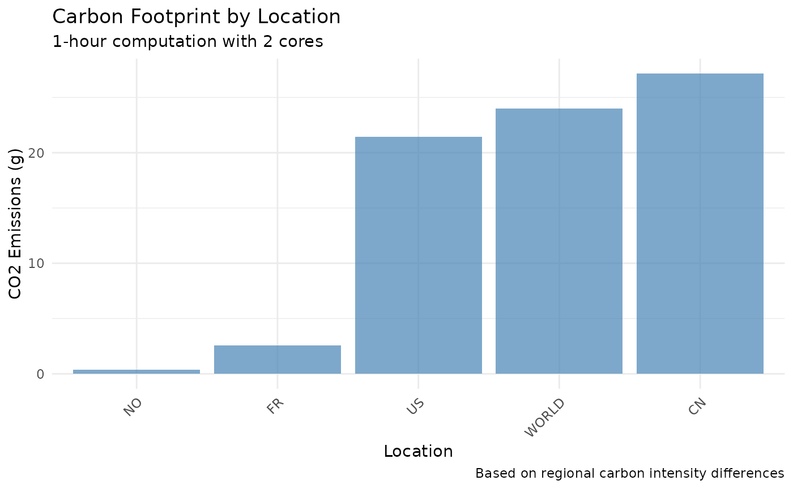
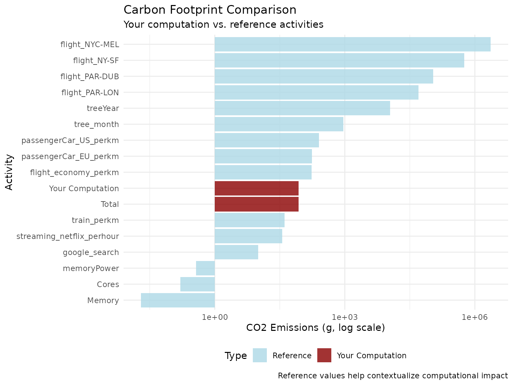

Getting Started with greenAlgoR
Adrien Taudière
2025-09-24
Source:vignettes/greenAlgoR-intro.Rmd
greenAlgoR-intro.RmdIntroduction
The greenAlgoR package provides tools to estimate the
carbon footprint and energy consumption of computational tasks in R.
This package is based on the Green Algorithms framework (Lannelongue, Grealey, and Inouye 2021), which
provides a standardized approach to quantifying the environmental impact
of computational research.
Understanding the carbon footprint of our computational work is
increasingly important as we strive to make research more sustainable.
The greenAlgoR package makes it easy to:
- Calculate CO2 emissions from R computations
- Compare different computational approaches
- Optimize code for environmental impact
- Track carbon footprint across research projects
Installation
# Install from GitHub (development version)
if (!require("devtools", quietly = TRUE)) {
install.packages("devtools")
}
devtools::install_github("adrientaudiere/greenAlgoR")Basic Usage
Calculating Carbon Footprint
The main function ga_footprint() calculates the carbon
footprint based on several parameters:
# Calculate footprint for a 2-hour computation
result <- ga_footprint(
runtime_h = 2,
location_code = "WORLD", # Global average carbon intensity
n_cores = 4,
TDP_per_core = 15, # Thermal Design Power per core in Watts
memory_ram = 16 # RAM in GB
)
# View key results
cat("Carbon footprint:", result$carbon_footprint_total_gCO2, "g CO2\n")
#> Carbon footprint: 104.6455 g CO2
cat("Energy needed:", result$energy_needed_kWh, "kWh\n")
#> Energy needed: 0.2203064 kWhUnderstanding the Results
The function returns a comprehensive list with detailed breakdown:
# View all available information
names(result)
#> [1] "runtime_h" "location_code"
#> [3] "TDP_per_core" "n_cores"
#> [5] "cpu_model" "memory_ram"
#> [7] "power_draw_per_gb" "usage core"
#> [9] "carbon_intensity" "PUE"
#> [11] "PSF" "power_draw_for_cores_kWh"
#> [13] "power_draw_for_memory_kWh" "energy_needed_kWh"
#> [15] "carbon_footprint_cores" "carbon_footprint_memory"
#> [17] "carbon_footprint_total_gCO2" "ref_value"
# Key components of carbon footprint
cat("CPU contribution:", result$carbon_footprint_cores, "g CO2\n")
#> CPU contribution: 95.19 g CO2
cat("Memory contribution:", result$carbon_footprint_memory, "g CO2\n")
#> Memory contribution: 9.45554 g CO2
cat("Total footprint:", result$carbon_footprint_total_gCO2, "g CO2\n")
#> Total footprint: 104.6455 g CO2Location-Specific Carbon Intensity
Carbon intensity varies significantly by location due to different energy sources:
# Compare carbon footprint across different locations
locations <- c("FR", "WORLD", "US", "CN", "NO")
footprints <- sapply(locations, function(loc) {
ga_footprint(runtime_h = 1, location_code = loc, n_cores = 2)$carbon_footprint_total_gCO2
})
# Create comparison data frame
comparison_df <- data.frame(
Location = locations,
CO2_emissions = footprints
)
print(comparison_df)
#> Location CO2_emissions
#> FR FR 2.5903478
#> WORLD WORLD 23.9940561
#> US US 21.4148213
#> CN CN 27.1461173
#> NO NO 0.3849152
# Visualize the comparison
ggplot(comparison_df, aes(x = reorder(Location, CO2_emissions), y = CO2_emissions)) +
geom_col(fill = "steelblue", alpha = 0.7) +
labs(
title = "Carbon Footprint by Location",
subtitle = "1-hour computation with 2 cores",
x = "Location",
y = "CO2 Emissions (g)",
caption = "Based on regional carbon intensity differences"
) +
theme_minimal() +
theme(axis.text.x = element_text(angle = 45, hjust = 1))
Hardware Configuration
Different hardware configurations have varying environmental impacts:
# Compare different CPU configurations
cpu_configs <- data.frame(
Config = c("Laptop", "Workstation", "Server"),
Cores = c(4, 8, 16),
TDP_per_core = c(10, 15, 25),
Memory = c(8, 32, 64)
)
# Calculate footprint for each configuration
cpu_configs$Footprint <- mapply(function(cores, tdp, mem) {
ga_footprint(
runtime_h = 1,
n_cores = cores,
TDP_per_core = tdp,
memory_ram = mem
)$carbon_footprint_total_gCO2
}, cpu_configs$Cores, cpu_configs$TDP_per_core, cpu_configs$Memory)
print(cpu_configs)
#> Config Cores TDP_per_core Memory Footprint
#> 1 Laptop 4 10 8 34.09389
#> 2 Workstation 8 15 32 104.64554
#> 3 Server 16 25 64 336.21108Current R Session Footprint
You can easily calculate the carbon footprint of your current R session:
# Get current session footprint
session_fp <- ga_footprint(runtime_h = "session")
cat("Current session footprint:", session_fp$carbon_footprint_total_gCO2, "g CO2\n")
#> Current session footprint: 0.01303559 g CO2
cat("Session runtime:", session_fp$runtime_h, "hours\n")
#> Session runtime: 0.0009005556 hoursVisualization with Reference Values
The package includes reference values to put your footprint in context:
# Calculate footprint with reference values
result_with_ref <- ga_footprint(
runtime_h = 2,
n_cores = 4,
memory_ram = 16,
add_ref_values = TRUE
)
# Create visualization comparing to reference values
ref_data <- result_with_ref$ref_value
ref_data$is_computation <- FALSE
ref_data$is_computation[ref_data$variable == "Total"] <- TRUE
# Add our computation to the data
computation_data <- data.frame(
variable = "Your Computation",
value = result_with_ref$carbon_footprint_total_gCO2,
prop_footprint = NA,
is_computation = TRUE
)
plot_data <- rbind(
ref_data[, c("variable", "value", "is_computation")],
computation_data[, c("variable", "value", "is_computation")]
)
plot_data$value <- as.numeric(plot_data$value)
ggplot(plot_data, aes(
x = reorder(variable, value), y = value,
fill = is_computation
)) +
geom_col(alpha = 0.8) +
scale_fill_manual(
values = c("FALSE" = "lightblue", "TRUE" = "darkred"),
name = "Type",
labels = c("Reference", "Your Computation")
) +
scale_y_log10() +
coord_flip() +
labs(
title = "Carbon Footprint Comparison",
subtitle = "Your computation vs. reference activities",
x = "Activity",
y = "CO2 Emissions (g, log scale)",
caption = "Reference values help contextualize computational impact"
) +
theme_minimal() +
theme(legend.position = "bottom")
Best Practices
- Choose efficient algorithms: Optimize your code to reduce runtime
- Consider location: Run computations in regions with cleaner energy
- Right-size resources: Use appropriate CPU/memory for your task
- Monitor regularly: Track footprint across projects
- Share awareness: Include carbon footprint in research reporting
Next Steps
- Explore the
ga_targets()function for pipeline analysis - Check the package documentation for advanced configuration options
- Consider the carbon impact in your research workflow decisions